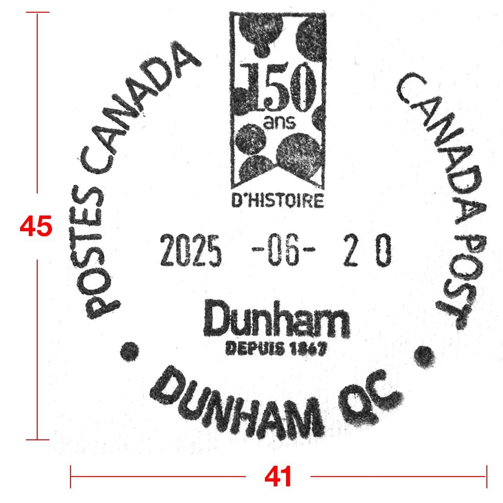

BP Dunham pictorial cancel
150 ans D'HISTOIRE – DEPUIS 1867
- Status
- Active
- Run dates
- ? to present
- Design
- "150 ans D'HISTOIRE / DEPUIS 1867"; 150 years of history, since 1867
- Ink colour
- Black
- Designer
- Unknown
- Post office
- BP Dunham
3773 Rue Principale
Dunham, QC
J0E 1M0 - Subjects
- celebration, anniversary
Collect it by mail. Send your stamped covers, with a stamped return envelope, to the post office address above. How to collect pictorial cancels by mail · en français
 BP St-Valentin2022
BP St-Valentin2022 BP Montréal Place d'ArmesFerris wheel
BP Montréal Place d'ArmesFerris wheel